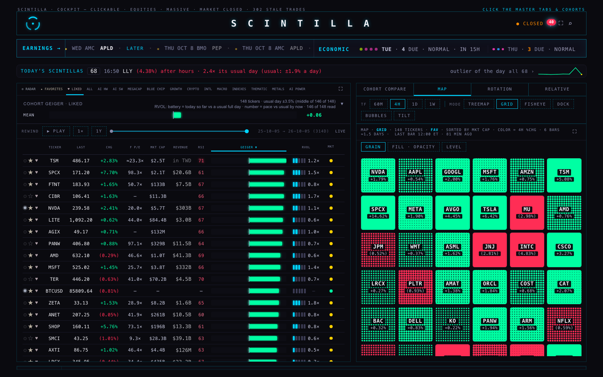
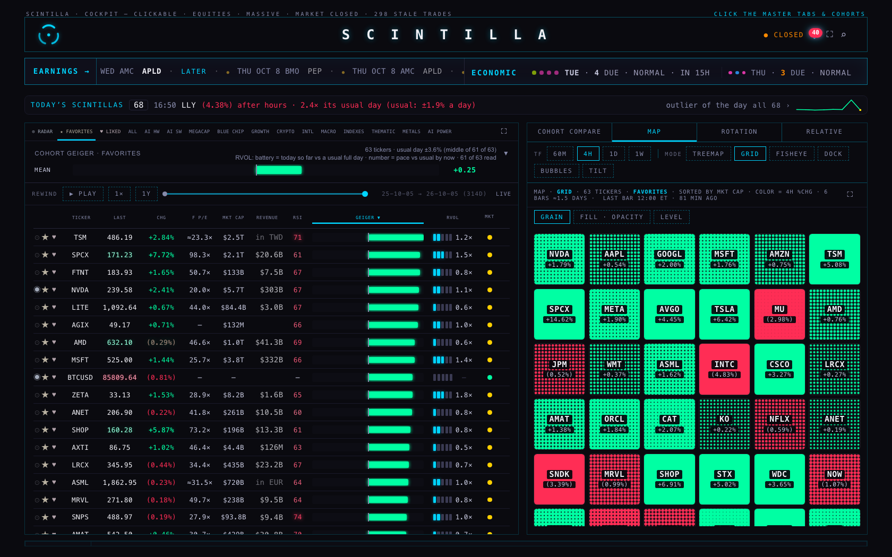
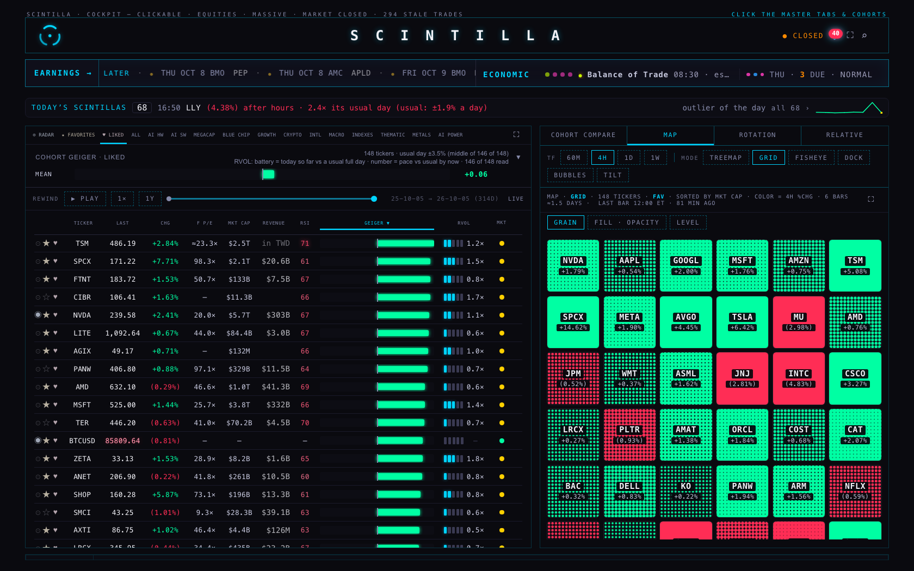
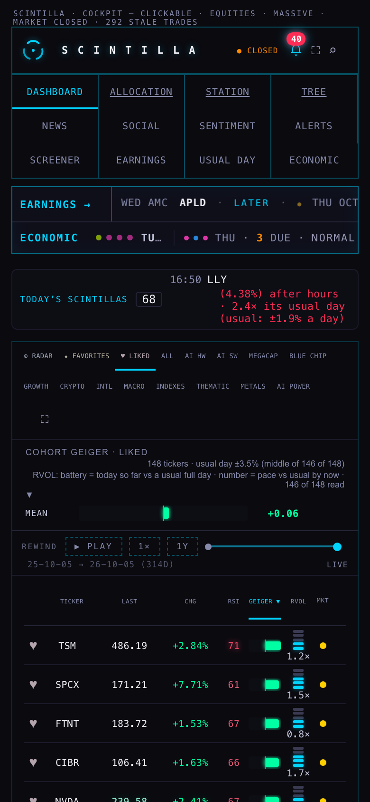
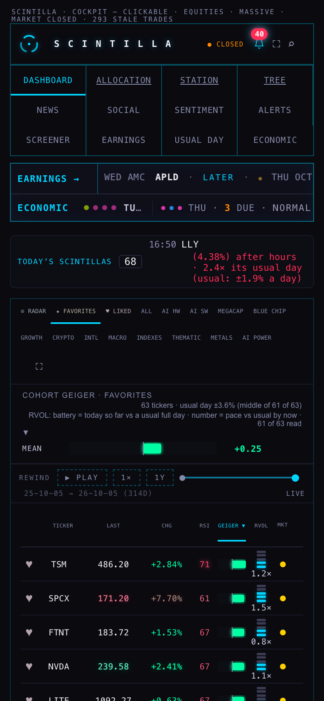

O2, 5 Oct 2026 (Linear SCI-68). Hub branch hub/o2-dashboard-favorites-20261005 from live c4c7996. No change to the Hub's page was needed; this branch carries only this report.





83610c9) opened today against today's data, not a picture taken on 1 Oct.The deployed page was fetched at 21:40 UTC and is byte-identical to index.html on this branch (sha256 101fdd1dfce9…); the boot line reads coh: "FAVORITES" and cohBootFor handles the fallback. Existing tests that pin it: tests/hub-s7-favorites-default-20261002.test.mjs, tests/economic-entry.test.mjs.
index.html was not edited, so build-trial.py was not run (the trial copy still equals the page).
Pictures: harness/board-open.mjs, headless. "NOW" loads https://scintillahub.ai/ with nothing substituted. Every non-GET request is blocked; 0 were attempted. Measured: opens on FAVORITES with 63 rows, LIKED after one tap 148 rows, reopened on FAVORITES, 0 page errors, at 1680 and at 390.
Hub tests on this branch: 1876 tests, 7 failures. Five are the known ones (Indicator Lab checkpoint, age function, readiness, saved review charts, xfeed-publish). Two more fail on the untouched live commit and are not on the known list: "MONTH is a Sunday-first grid…" and "REGIME: the view no longer reads catalyst_odds…". This branch changes no file they read.